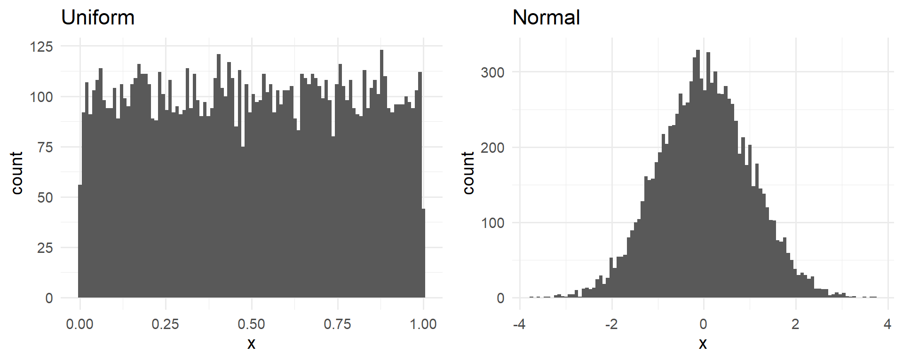
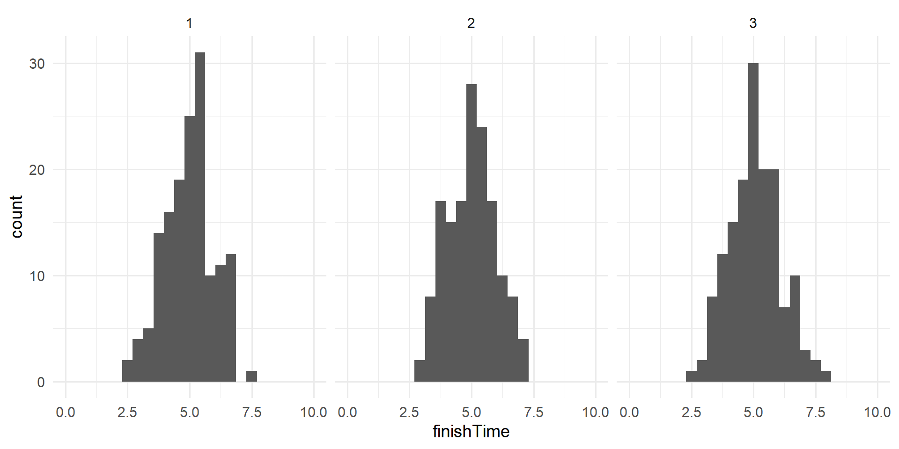
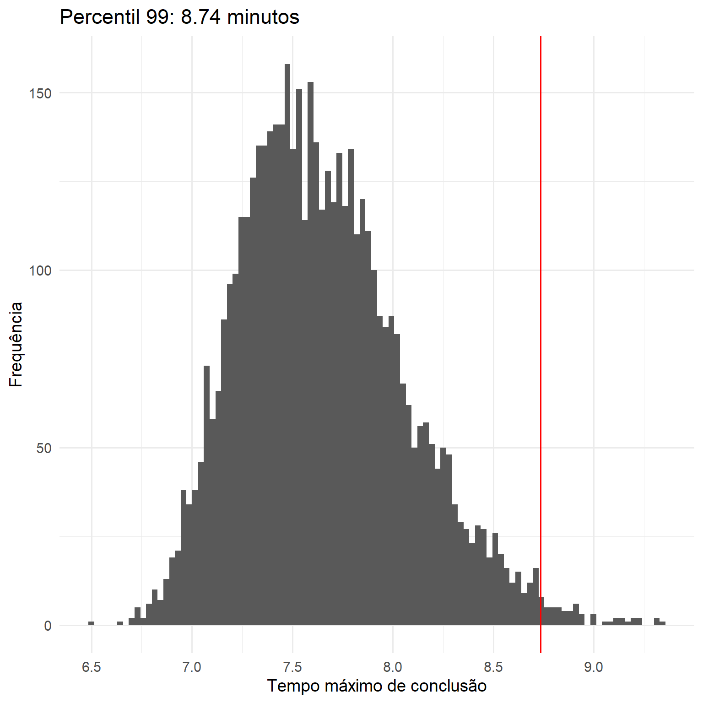
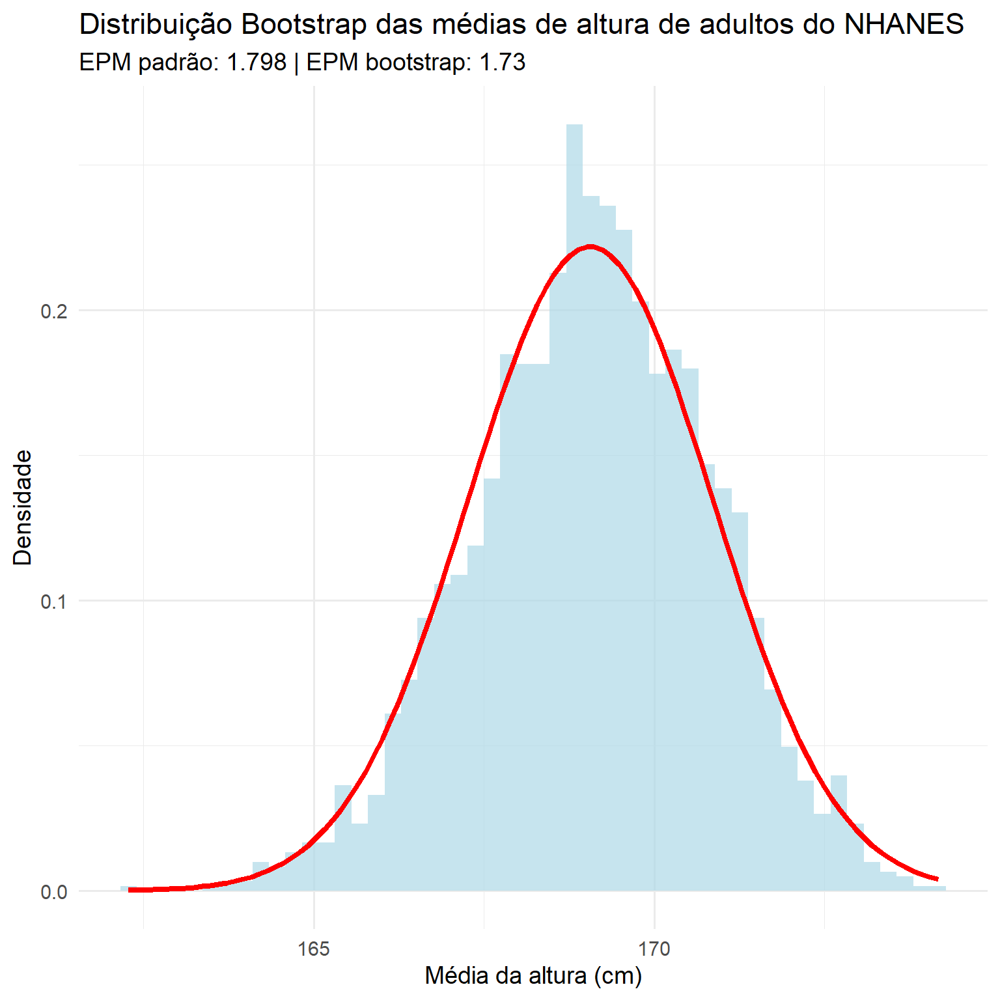

O uso de simulações computacionais tornou-se um aspecto essencial da Estatística moderna.
Por exemplo, um dos livros mais importantes em Ciência da Computação prática, chamado Numerical Recipes in C, afirma o seguinte:
“Se pudéssemos escolher entre ser um especialista em uma vasta coleção de livros sobre estatística analítica ou adquirir habilidades razoáveis para realizar simulações estatísticas de Monte Carlo, sem dúvida, escolheríamos a segunda opção.” (Press et al. 1992, p. 691).
Neste capítulo, apresentaremos o conceito de simulação de Monte Carlo e discutiremos como ela pode ser usada para realizar análises estatísticas.
19.1 Objetivos de aprendizagem
Após a leitura deste capítulo, você deverá ser capaz de:
⪧ Descrever o conceito de simulação de Monte Carlo.
⪧ Descrever o significado de aleatoriedade1 em estatística.
⪧ Descrever como números pseudoaleatórios são gerados.
⪧ Descrever o conceito de bootstrap.
19.2 Simulação de Monte Carlo
O conceito de simulação de Monte Carlo foi idealizado pelos matemáticos Stan Ulam e Nicholas Metropolis, que trabalhavam no desenvolvimento de uma arma atômica para os EUA como parte do Projeto Manhattan.
Eles precisavam calcular a distância média que um nêutron percorreria em uma substância antes de colidir com um núcleo atômico, mas não conseguiam calcular isso usando a matemática padrão. Ulam percebeu que esses cálculos poderiam ser simulados usando números aleatórios, como em um jogo de cassino. Em um jogo de cassino como a roleta, os números são gerados aleatoriamente; para estimar a probabilidade de um resultado específico, seria necessário jogar centenas de vezes. O tio de Ulam jogava no cassino de Monte Carlo, em Mônaco, que aparentemente deu origem ao nome dessa nova técnica.
Existem quatro etapas para realizar uma simulação de Monte Carlo:
Definir um domínio de valores possíveis;
Gerar números aleatórios dentro desse domínio a partir de uma distribuição de probabilidade;
Realizar um cálculo usando os números aleatórios;
Combinar os resultados de várias repetições.
Por exemplo, digamos que eu queira descobrir quanto tempo devo reservar para um teste em sala de aula. Vamos supor, por enquanto, que sabemos que a distribuição dos tempos de conclusão do teste é normal, com média de 5 minutos e desvio padrão de 1 minuto. Dado isso, qual deve ser a duração do teste para que todos os alunos consigam terminar a prova em 99% das vezes? Existem duas maneiras de resolver esse problema. A primeira é calcular a resposta usando uma teoria matemática conhecida como estatística de valores extremos. No entanto, isso envolve matemática complexa. Alternativamente, poderíamos usar a simulação de Monte Carlo. Para isso, precisamos gerar amostras aleatórias a partir de uma distribuição normal.
19.3 Aleatoriedade em estatística
O termo “aleatório” é frequentemente usado coloquialmente para se referir a coisas bizarras ou inesperadas, mas em estatística o termo tem um significado muito especial: um processo é aleatório se for imprevisível. Por exemplo, se eu lançar uma moeda honesta 10 vezes, o valor do resultado em um lançamento não me fornece nenhuma informação que me permita prever o resultado do próximo lançamento. É importante notar que o fato de algo ser imprevisível não significa necessariamente que não seja determinístico. Por exemplo, quando lançamos uma moeda, o resultado do lançamento é determinado pelas leis da física; se soubéssemos todas as condições com detalhes suficientes, deveríamos ser capazes de prever o resultado do lançamento. No entanto, muitos fatores se combinam para tornar o resultado do lançamento da moeda imprevisível na prática.
Psicólogos demonstraram que os seres humanos, na verdade, têm uma noção bastante deficiente de aleatoriedade. Primeiro, tendemos a enxergar padrões onde eles não existem. Em casos extremos, isso leva ao fenômeno da pareidolia, no qual as pessoas percebem objetos familiares em padrões aleatórios (como enxergar uma nuvem como um rosto humano ou ver a Virgem Maria em uma torrada). Segundo, os humanos tendem a pensar em processos aleatórios como autocorretivos, o que nos leva a esperar que “vamos ganhar” depois de perder muitas rodadas em um jogo de azar, um fenômeno conhecido como “falácia do jogador”.
19.4 Geração de números aleatórios
Executar uma simulação de Monte Carlo exige que geremos números aleatórios. Gerar números verdadeiramente aleatórios (ou seja, números completamente imprevisíveis) só é possível por meio de processos físicos, como a desintegração de átomos ou o lançamento de dados, que são difíceis de obter e/ou muito lentos para serem úteis em simulações computacionais (embora possam ser obtidos do NIST Randomness Beacon).
Em geral, em vez de números verdadeiramente aleatórios, usamos números pseudoaleatórios gerados por um algoritmo de computador; Esses números parecerão aleatórios no sentido de que são difíceis de prever, mas a série de números na verdade se repetirá em algum ponto. Por exemplo, o gerador de números aleatórios usado em R repetirá após \(2^{19937-1}\) números. Isso é muito mais do que o número de segundos na história do universo, e geralmente consideramos isso adequado para a maioria dos propósitos em análises estatísticas.
A maioria dos softwares estatísticos inclui funções para gerar números aleatórios para cada uma das principais distribuições de probabilidade, como a distribuição uniforme (todos os valores entre 0 e 1 igualmente), a distribuição normal e a distribuição binomial (por exemplo, rolar dados, cara ou coroa).
A fig. 19.1 mostra exemplos de números gerados a partir de funções de distribuição uniforme e normal.
Code
```{r}#| label: fig-random-distributions#| fig-cap: "Exemplos de números aleatórios gerados a partir de uma distribuição uniforme (esquerda) ou normal (direita)."#| fig-width: 10#| fig-height: 4p1 <-tibble(x =runif(10000) ) %>%ggplot(aes(x)) +geom_histogram(bins =100) +labs(title ="Uniform")p2 <-tibble(x =rnorm(10000) ) %>%ggplot(aes(x)) +geom_histogram(bins =100) +labs(title ="Normal")plot_grid(p1, p2, ncol =2)```

Fig. 19.1 Exemplos de números aleatórios gerados a partir de uma distribuição uniforme (esquerda) ou normal (direita).
Também é possível gerar números aleatórios para qualquer distribuição usando uma função quantil para a distribuição. Esta é a inversa da função de distribuição cumulativa; em vez de identificar as probabilidades cumulativas para um conjunto de valores, a função quantil identifica os valores para um conjunto de probabilidades cumulativas. Usando a função quantil, podemos gerar números aleatórios a partir de uma distribuição uniforme e, em seguida, mapeá-los para a distribuição de interesse por meio de sua função quantil.
Por padrão, os geradores de números aleatórios em softwares estatísticos geram um conjunto diferente de números aleatórios a cada execução. No entanto, também é possível gerar exatamente o mesmo conjunto de números aleatórios, definindo o que é chamado de semente aleatória para um valor específico. Se você observar o código que gerou essas figuras, (disponível em https://press.princeton.edu/isbn/9780691218441, clique em Resources), faremos isso em muitos dos exemplos deste curso, para garantir que os exemplos sejam reproduzíveis.
19.5 Usando a simulação de Monte Carlo
Vamos voltar ao nosso exemplo de tempos de conclusão de provas. Digamos que eu aplique três provas e registre os tempos de conclusão de cada aluno em cada prova, que podem se parecer com as distribuições apresentadas na fig. 19.2.
Code
```{r}#| label: fig-exam-times#| fig-cap: "Distribuições simuladas de tempo de conclusão."#| fig-width: 10#| fig-height: 5finishTimeDf <-tibble(finishTime =rnorm(3*150, mean =5, sd =1),quiz =kronecker(c(1:3), rep(1, 150)))ggplot(finishTimeDf, aes(finishTime)) +geom_histogram(bins =25) +facet_grid(. ~ quiz) +xlim(0, 10)```

Fig. 19.2 Distribuições simuladas de tempo de conclusão.
O que realmente queremos saber para responder à nossa pergunta não é como é a distribuição dos tempos de conclusão, mas sim como é a distribuição do tempo máximo de conclusão para cada prova. Para isso, podemos simular o tempo de conclusão de uma prova, assumindo que os tempos de conclusão seguem uma distribuição normal, como mencionado anteriormente; para cada uma dessas provas simuladas, registramos o tempo máximo de conclusão. Repetimos essa simulação um grande número de vezes (5000 devem ser suficientes) e registramos a distribuição dos tempos máximos de conclusão, que é mostrada na fig. 19.3.
Code
```{r}#| label: fig-max-times#| fig-cap: "Distribuição dos tempos máximos de conclusão nas simulações."#| fig-width: 8#| fig-height: 8# sample maximum value 5000 times and compute 99th percentilenRuns <-5000sampSize <-150sampleMax <-function(sampSize =150) { samp <-rnorm(sampSize, mean =5, sd =1)return(max(samp))}maxTime <-replicate(nRuns, sampleMax())cutoff <-quantile(maxTime, 0.99)tibble(maxTime) %>%ggplot(aes(maxTime)) +geom_histogram(bins =100) +geom_vline(xintercept = cutoff, color ="red") +labs(x ="Tempo máximo de conclusão",y ="Frequência",title =paste0("Percentil 99: ", round(cutoff, 2), " minutos") )```

Fig. 19.3 Distribuição dos tempos máximos de conclusão nas simulações.
Isso mostra que o percentil 99 da distribuição dos tempos de conclusão está em 8.74, o que significa que, se déssemos esse tempo para o teste, todos deveriam terminá-lo em 99% das vezes.
É sempre importante lembrar que nossas suposições importam — se estiverem erradas, os resultados da simulação serão inúteis.
Neste caso, assumimos que a distribuição dos tempos de conclusão seguia uma distribuição normal com uma média e um desvio padrão específicos; se essas suposições estiverem incorretas (e quase certamente estão, já que é raro que os tempos decorridos sigam uma distribuição normal), a verdadeira resposta pode ser muito diferente.
19.6 Usando simulação em estatística: O Método bootstrap
Até agora, usamos simulação para comprovar princípios estatísticos, mas também podemos usá-la para responder a questões estatísticas reais. Nesta seção, apresentaremos um conceito conhecido como bootstrap, que nos permite usar simulação para quantificar nossa incerteza sobre estimativas estatísticas.
Mais adiante, veremos outros exemplos de como a simulação pode ser usada para responder a questões estatísticas, especialmente quando os métodos estatísticos teóricos não estão disponíveis ou quando suas premissas são muito difíceis de atender.
19.6.1 Calculando o bootstrap
Em capítulo anterior, usamos nosso conhecimento da distribuição amostral da média para calcular o erro padrão da média.
Mas e se não pudermos assumir que as estimativas seguem uma distribuição normal, ou se não conhecermos sua distribuição?
A ideia do bootstrap é usar os próprios dados para estimar uma resposta.
O nome vem da ideia de se erguer pelos próprios bootstraps (alças para calçar uma bota), expressando a noção de que não temos nenhuma fonte externa de influência, então precisamos confiar nos próprios dados.
O método bootstrap foi concebido por Bradley Efron, do Departamento de Estatística de Stanford, um dos estatísticos mais influentes do mundo.
A ideia por trás do bootstrap é que realizamos amostragens repetidas do conjunto de dados real.
É importante ressaltar que fazemos amostragens com reposição, de forma que o mesmo ponto de dados frequentemente acabe sendo representado várias vezes em uma das amostras.
Em seguida, calculamos nossa estatística de interesse em cada uma das amostras bootstrap e usamos a distribuição dessas estimativascomo nossa distribuição amostral.
De certa forma, tratamos nossa amostra específica como a população inteira e, então, realizamos amostragens repetidas com reposição para gerar nossas amostras para análise. Isso pressupõe que nossa amostra específica seja um reflexo preciso da população, o que provavelmente é razoável para amostras maiores, mas pode falhar quando as amostras são menores.
Vamos começar usando o bootstrap para estimar a distribuição amostral da média da altura de adultos no conjunto de dadosNHANES, para que possamos comparar o resultado com o erro padrão da média (EPM) que discutimos anteriormente por meio de m[etodos paramétricos.
Code
```{r}#| label: fig-bootstrap-example#| fig-cap: "Um exemplo de bootstrap para calcular o erro padrão da média da altura de adultos no conjunto de dados NHANES. O histograma mostra a distribuição das médias nas amostras de bootstrap, enquanto a linha vermelha mostra a distribuição normal com base na média e no desvio padrão da amostra."#| fig-width: 8#| fig-height: 8# perform the bootstrap to compute SEM - Mean Standard Error and compare to parametric methodnRuns <-2500sampleSize <-32heightSample <- NHANES_adult %>%sample_n(sampleSize)bootMeanHeight <-function(df) { bootSample <-sample_n(df, dim(df)[1], replace =TRUE)return(mean(bootSample$Height))}bootMeans <-replicate(nRuns, bootMeanHeight(heightSample))SEM_standard <-sd(heightSample$Height) /sqrt(sampleSize)SEM_bootstrap <-sd(bootMeans)options(pillar.sigfig =3)tibble(bootMeans = bootMeans) %>%ggplot(aes(bootMeans)) +geom_histogram(aes(y =after_stat(density)), bins =50, fill ="lightblue", alpha =0.7) +stat_function(fun = dnorm, n =100,args =list(mean =mean(heightSample$Height),sd = SEM_standard ),linewidth =1.5, color ="red" ) +labs(x ="Média da altura (cm)",y ="Densidade",title ="Distribuição Bootstrap das médias de altura de adultos do NHANES",subtitle =paste0("EPM padrão: ", round(SEM_standard, 3)," | EPM bootstrap: ", round(SEM_bootstrap, 3) ) )```

Fig. 19.4 Um exemplo de bootstrap para calcular o erro padrão da média da altura de adultos no conjunto de dados NHANES. O histograma mostra a distribuição das médias nas amostras de bootstrap, enquanto a linha vermelha mostra a distribuição normal com base na média e no desvio padrão da amostra.
A fig. 19.4 mostra que a distribuição das médias nas amostras de bootstrap é bastante próxima da estimativa teórica com base na suposição de normalidade.
Normalmente, não empregaríamos o bootstrap para calcular intervalos de confiança para a média (já que geralmente podemos assumir que a distribuição normal é apropriada para a distribuição amostral da média, desde que nossa amostra seja grande o suficiente), mas este exemplo mostra como o método nos dá um resultado aproximadamente igual ao do método padrão baseado na distribuição normal.
O bootstrap seria mais frequentemente usado para gerar erros padrão para estimativas de outras estatísticas onde sabemos ou suspeitamos que a distribuição normal não seja apropriada.
Além disso, posteriormente, você verá como também podemos usar as amostras bootstrap para gerar estimativas da incerteza em nossa estatística amostral.
19.7 Leituras sugeridas
Inferência Estatística na Era da Computação: Algoritmos, Evidências e Ciência de Dados, de Bradley Efron e Trevor Hastie.
Esse livro (Efron; Hastie, 2016) detalha as muitas maneiras pelas quais os avanços computacionais viabilizaram novos métodos estatísticos, como o bootstrap.
Esteja ciente que, em termos matemáticos, o livro é bastante denso.
EFRON, Bradley; HASTIE, Trevor J. Computer age statistical inference: Algorithms, evidence, and data science. Cambridge, NY: Cambridge university press, 2016.
Aleatoriedade [randomness] é um conceito abrangente que descreve a natureza de eventos ou de fenômenos. Já randomização [randomization], que vimos no Capítulo 1, é uma técnica ou método usado especificamente para garantir a aleatoriedade em contexto de experimentos científicos ou estudos estatísticos. Ainda que relacionados, esses termos são usados em contextos distintos: a aleatoriedade é usada para descrever a característica geral de eventos que ocorrem de forma imprevisível ou sem um padrão intencional. A randomização é usada para descrever uma ação proposital em pesquisas com o intuito de, ao distribuir aleatoriamente os participantes pelos grupos de de tratamento ou de controle, minimizar viés e confusão. [nota da tradutora]↩︎